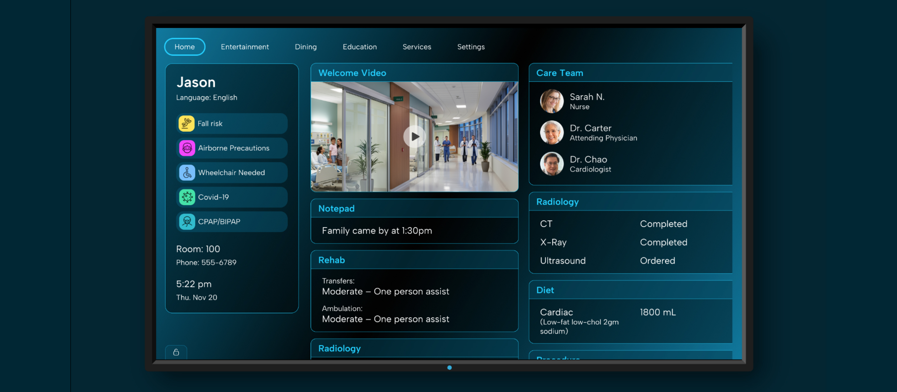
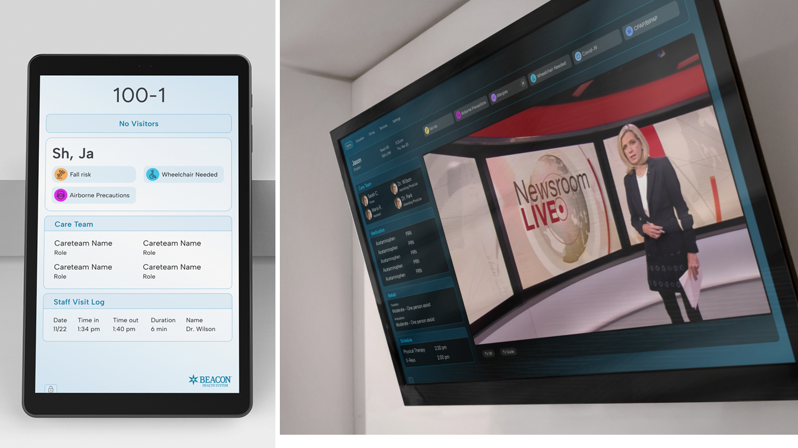

Patient / Care Board
A product strategy and design program for a startup delivering patient health information through digital displays in hospital environments—focused on identifying growth blockers, clarifying product direction, and building a scalable UX system.

A healthcare startup had built a real product: getting the right clinical information to the right people across hospital environments. But the platform had grown organically—multiple display contexts, different screen sizes, touchscreen and d-pad navigation, no shared design logic connecting them. They needed a unified foundation that could scale without sacrificing hardware flexibility.

I led both the strategic and design work—starting by identifying what was keeping the product from growing and prioritizing a systems approach to the UI/UX as the foundation for everything that followed. From there we defined a clearer product direction and built the design system to support it.
The design had to work for patients, families, nurses, and physicians simultaneously—across hardware that ranged from small door panels to large wall-mounted displays.